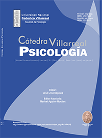

REVISTAS DE INVESTIGACIÓN
REVISTAS DE INVESTIGACIÓN|  |
CÁTEDRA VILLARREAL - PSICOLOGÍA La Revista Cátedra Villarreal - Psicologia es una revista psicológico editada por la facultad de Psicología de la Universidad Nacional Federico Villarreal de Lima-Perú. Tiene como objetivo fomentar el estudio de la psicología a través articulos de investigaciones efectuadas por la comunidad. Puede accederse a su contenido de manera gratuita. La revista tiene una periodicidad anual. |